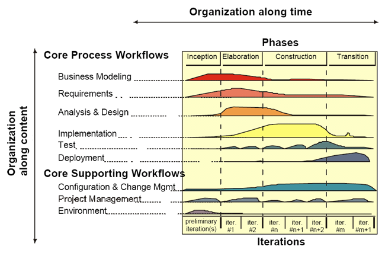

The Rational Unified Process is a Software Engineering Process.
The Rational Unified Process describes how to effectively deploy commercially proven approaches to software development for software development teams. These are called “best practices” not so much because you can precisely quantify their value, but rather, because they are observed to be commonly used in industry by successful organizations. The Rational Unified Process provides each team member with the guidelines, templates and tool mentors necessary for the entire team to take full advantage of among others the following best practices:
Given today’s sophisticated software systems, it is not possible to sequentially
An iterative approach is required that allows an increasing understanding of the problem through successive refinements, and to incrementally grow an effective solution over multiple iterations.
The Rational Unified Process describes how to elicit, organize, and document
required functionality and constraints; track and document tradeoffs and
decisions; and easily capture and
communicate business requirements. The notions of use case and scenarios
proscribed in the process has
proven to be an excellent way to capture functional requirements and to ensure
that these drive the design,
implementation and testing of software, making it more likely that the final
system fulfills the end user
needs. They provide coherent and traceable threads through both the development
and the delivered
system.
The process focuses on early development and baselining of a
robust executable architecture, prior to committing resources for full-scale
development. It describes how
to design a resilient architecture that is flexible, accommodates change, is
intuitively understandable, and
promotes more effective software reuse. The Rational Unified Process supports
component-based software
development. Components are non-trivial modules, subsystems that fulfill a clear
function. The Rational
Unified Process provides a systematic approach to defining an architecture using
new and existing
components. These are assembled in a well-defined architecture, either ad hoc,
or in a component
infrastructure such as the Internet, CORBA, and COM, for which an industry of
reusable components is
emerging.
The process shows you how to visually model software to capture the
structure and behavior of architectures and components. This allows you to hide
the details and write code
using “graphical building blocks.” Visual abstractions help you communicate
different aspects of your
software; see how the elements of the system fit together; make sure that the
building blocks are consistent
with your code; maintain consistency between a design and its implementation;
and promote unambiguous
communication. The industry-standard Unified Modeling Language (UML), created by
Rational Software,
is the foundation for successful visual modeling.
Poor application performance and poor reliability are common factors which
dramatically inhibit the acceptability of today’s software applications. Hence,
quality should be reviewed
with respect to the requirements based on reliability, functionality,
application performance and system
performance. The Rational Unified Process assists you in the planning, design,
implementation, execution,
and evaluation of these test types. Quality assessment is built into the
process, in all activities, involving all
participants, using objective measurements and criteria, and not treated as an
afterthought or a separate
activity performed by a separate group.
The ability to manage change¾making certain that each change is
acceptable, and being able to track changes¾is essential in an environment in
which change is inevitable.
The process describes how to control, track and monitor changes to enable
successful iterative
development. It also guides you in how to establish secure workspaces for each
developer by providing
isolation from changes made in other workspaces and by controlling changes of
all software artifacts (e.g.,
models, code, documents, etc.). And it brings a team together to work as a
single unit by describing how to
automate integration and build management.
The process can be described in two dimensions, or along two axis:

The iterative Model graph shows how the process is structured along two dimensions.